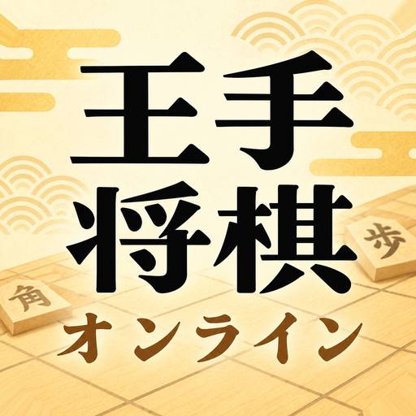

王手将棋オンライン
先に王手をかけた方が勝ち。オンラインでレート戦。
概要
先に王手をかけた方が勝ちになる「王手将棋」を、オンラインで対局できるアプリです。1局が数分で終わる、スピード感のある読み合いを楽しめます。オンラインでのランダムな相手との対局(3分切れ負け・レート戦・ランキング)をメインに、友達との対局(部屋を作って対局。3分切れ負け・レートの増減なし)、1台の端末を使った2人での対局、4段階の強さのAIとの対局(先手・後手を選べます)ができます。
オンライン対局で不適切なユーザー名を見つけた場合は、ランキングや対局結果の画面の「…」から通報・ブロックできます。そのほかの不適切な利用者の報告やお問い合わせは、下記の連絡先までお願いいたします。
ルール
- 先に相手の玉に王手をかけた方が勝ちです。
- 持ち駒を打って王手をかけても勝ちです(歩を打っての王手も勝ちになります)。
- それ以外のルールは通常の将棋と同じです(同じ局面が4回現れたら千日手で引き分け)。
- 自分の玉を取られる形になる手は指せません。
オンライン対局(レート戦)の勝ち負けについて
- ランダムな相手との対局で、相手が20秒見つからないときはBOTと対局します。BOTに勝つとレートが上がり、負けてもレートは下がりません。
- ランダムな相手との対局(レート戦)では、相手が決まったあと(「マッチングしました」の画面が出たあと)にアプリを閉じたり、60秒以上アプリから離れたり通信が切れたりすると、対局が始まる前でも負けになります。
- 対局中にアプリを閉じたり離れたりした場合は、55秒以内にアプリを開き直せば対局に戻れます。それを過ぎると戻れず、切断負けになります。
- 友達との対局では、レートは変わりません。
クレジット
- 効果音:On-Jin ～音人～(https://on-jin.com/)
- 効果音:効果音ラボ(https://soundeffect-lab.info/)
- 駒の書体:Kaisei Tokumin(SIL Open Font License 1.1)
本アプリに含まれる効果音を取り出して再配布することはできません。
プライバシーポリシー
Contact